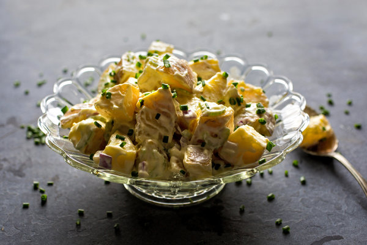

Papas alioli!
Papas alioli

Homemade garlic alioli gives this otherwise classic potato salad a pungent kick. If you don’t want to add the hard-cooked eggs, use another 1/2 pound of potatoes instead. This is best served at least an hour or so after making to allow the flavors to mellow. Or make it the day before and store it in the refrigerator; bring it to room temperature before serving. If you can find garlic chives, there’s no better place for them than here.
Ingredients:
- 3 large eggs
- 2 garlic cloves, grated
- 1/2 teaspoon kosher salt, more as needed
- 1/2 tablespoon lemon juice, more as needed
- 1 large egg yolk
- 1 cup of extra-virgin olive oil
- 1/4 cup sour cream
- 1/4 cup finely chopped celery
- 1/4 cup finely chopped red onion
- 2 pounds small waxy white or yellow potatoes, roughly about the same size
- Black pepper, as needed
- 2 tablespoon finely chopped chives, for garnish
Directions:
- Place 2 eggs in a small pot with water to cover. Bring to a boil over high heat; immediately remove from heat and cover for 8 minutes. Transfer eggs to a bowl of ice water to cool. Peel and dice small.
- Meanwhile, combine grated garlic, salt and lemon juice in a blender, and pulse a few times to combine. Pulse in egg yolk. With motor running, slowly drizzle in olive oil until completely incorporated and mayonnaise is thick. Scrape into a bowl and fold in sour cream. Fold in celery and red onion.
- Place whole unpeeled potatoes in a large pot with enough salted water to cover by 1 inch. Bring to a boil over medium-high heat and cook until potatoes are just tender, 15 to 25 minutes depending upon size. Drain and cut potatoes into 1 1/2-inch chunks as soon as you can handle them.
- Transfer hot potatoes to a large bowl and toss with diced boiled eggs and 2/3 of the dressing. Let cool to room temperature, or refrigerate until ready to use. Just before serving, toss with some of the remaining dressing to taste (if desired). Season with black pepper and add more salt if necessary. Sprinkle with chives.